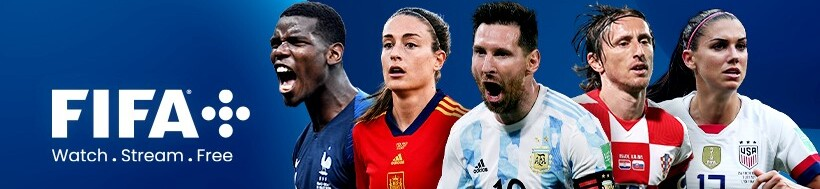
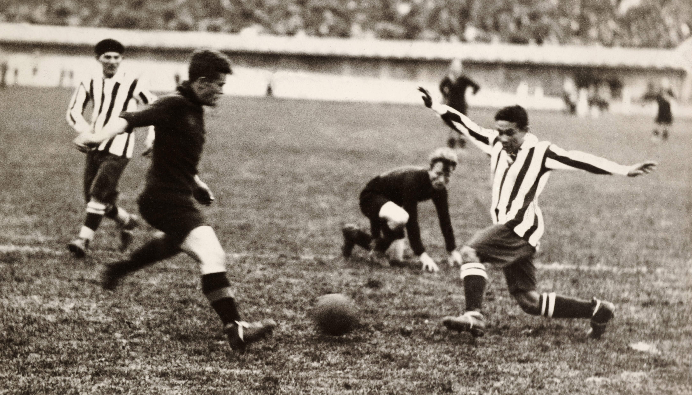
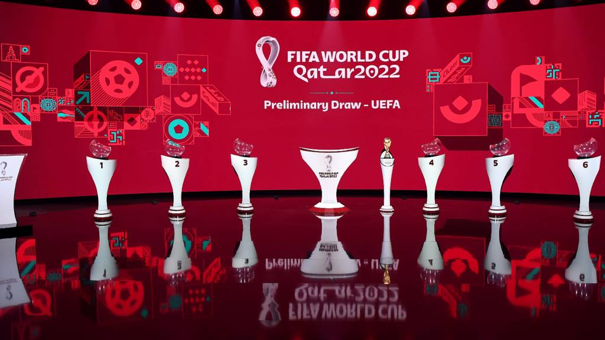
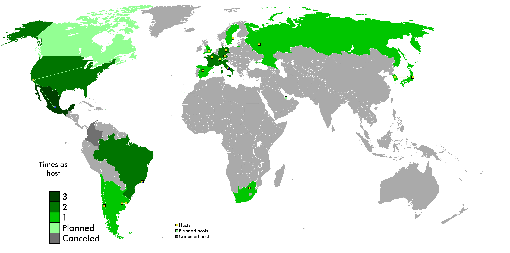
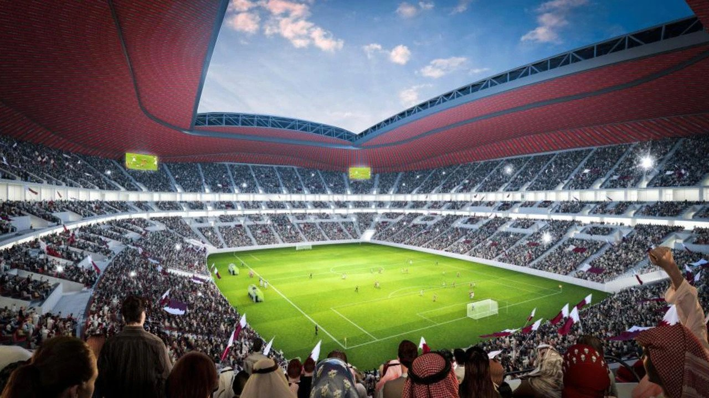
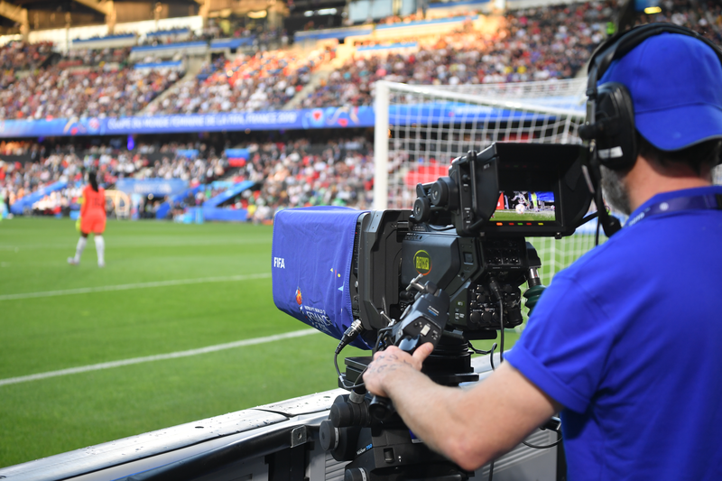
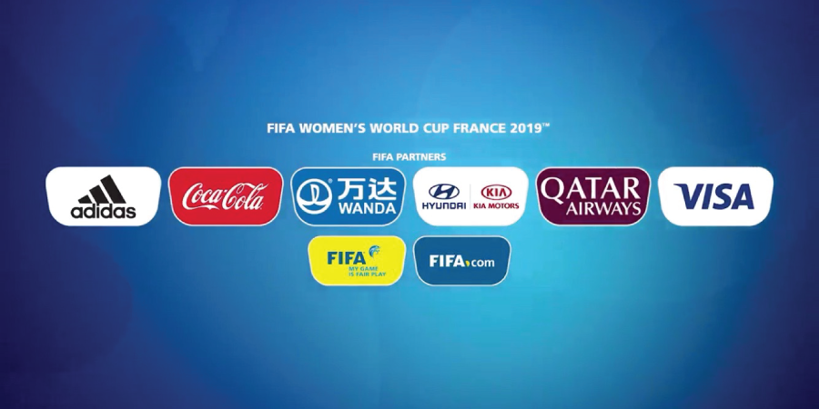
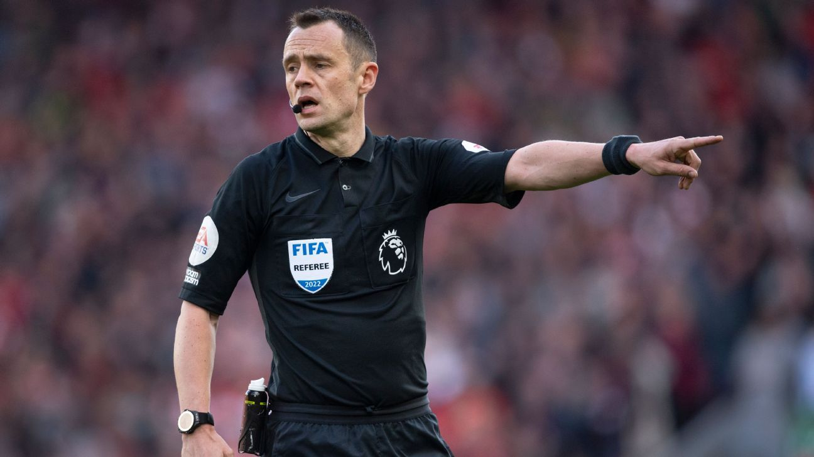
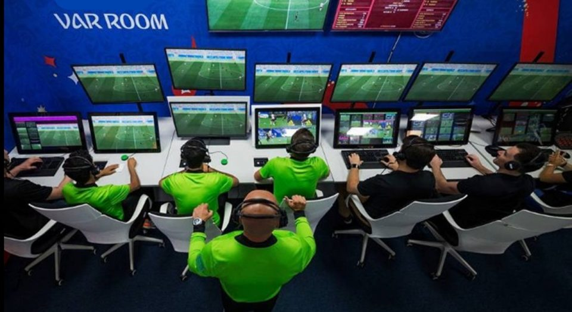
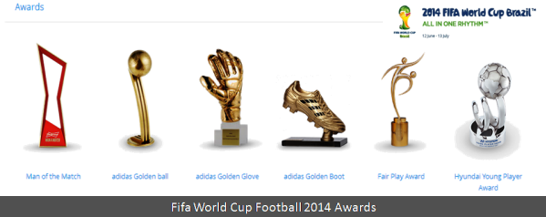

Fifa World Cup
The World Cup is the most prestigious association football tournament in
the world, as well as the most widely viewed and followed single
sporting event in the world. The cumulative viewership of all matches of
the 2006 World Cup was estimated to be 26.29 billion. 17 countries have
hosted the World Cup. Brazil, France, Italy, Germany, and Mexico have
each hosted twice, while Uruguay, Switzerland, Sweden, Chile, England,
Argentina, Spain, the United States, Japan and South Korea, South
Africa, and Russia have each hosted once. Qatar will host the 2022
tournament
Trophies Won
| Country |
Cup Won |
| Brazil |
05 |
| Germany |
04 |
| Italy |
04 |
| Argentina |
02 |
| Uruguay |
02 |
| France |
02 |
| Spain |
01 |
| England |
01 |
Brazil have won five times, and they are the only team to have played in
every tournament. The other World Cup winners are Germany and Italy,
with four titles each; Argentina, France, and inaugural winner Uruguay,
with two titles each; and England and Spain, with one title each.
History

The world's first international football match was a challenge match
played in Glasgow in 1872 between Scotland and England. The first
international tournament for nations, the inaugural British Home
Championship, took place in 1884. As football grew in popularity in
other parts of the world at the start of the 20th century, it was held
as a demonstration sport with no medals awarded at the 1900 and 1904
Summer Olympics (however, the International Olympic Committee has
retroactively upgraded their status to official events), and at the 1906
Intercalated Games.
After FIFA was founded in 1904, it tried to arrange an international
football tournament between nations outside the Olympic framework in
Switzerland in 1906. These were very early days for international
football, and the official history of FIFA describes the competition as
having been a failure.
At the 1908 Summer Olympics in London, football became an official
competition. Planned by The Football Association (FA), England's
football governing body, the event was for amateur players only and was
regarded suspiciously as a show rather than a competition. Great Britain
(represented by the England national amateur football team) won the gold
medals. They repeated the feat at the 1912 Summer Olympics in Stockholm.
The Trophy

From 1930 to 1970, the Jules Rimet Trophy was awarded to the winning
team. It was originally simply known as the World Cup or Coupe du Monde,
but in 1946 it was renamed after the FIFA president Jules Rimet who set
up the first tournament. In 1970, Brazil's third victory in the
tournament entitled them to keep the trophy permanently. However, the
trophy was stolen in 1983 and has never been recovered, apparently
melted down by the thieves.
After 1970, a new trophy, known as the FIFA World Cup Trophy, was
designed. The experts of FIFA, coming from seven countries, evaluated
the 53 presented models, finally opting for the work of the Italian
designer Silvio Gazzaniga. The new trophy is 36 cm (14.2 in) high, made
of solid 18 carat (75%) gold and weighs 6.175 kg (13.6 lb).The base
contains two layers of semi-precious malachite while the bottom side of
the trophy bears the engraved year and name of each FIFA World Cup
winner since 1974.
This new trophy is not awarded to the winning nation permanently. World
Cup winners retain the trophy only until the post-match celebration is
finished. They are awarded a gold-plated replica rather than the solid
gold original immediately afterwards.
Format

Qualification:
Since the second World Cup in 1934, qualifying tournaments have been
held to thin the field for the final tournament.They are held within the
six FIFA continental zones ,overseen by their respective confederations.
For each tournament, FIFA decides the number of places awarded to each
of the continental zones beforehand, generally based on the relative
strength of the confederations' teams.
Final tournament:
The current final tournament has been used since 1998 and features 32
national teams competing over the course of a month in the host nations.
There are two stages: the group stage followed by the knockout stage.
In the group stage, teams compete within eight groups of four
teams each. Eight teams are seeded, including the hosts, with the other
seeded teams selected using a formula based on the FIFA World Rankings
or performances in recent World Cups. Each group plays a round-robin
tournament, in which each team is scheduled for three matches against
other teams in the same group. This means that a total of six matches
are played within a group.
knockout stage is a single-elimination tournament in which teams
play each other in one-off matches, with extra time and penalty
shootouts used to decide the winner if necessary. It begins with the
round of 16 (or the second round) in which the winner of each group
plays against the runner-up of another group. This is followed by the
quarter-finals, the semi-finals, the third-place match (contested by the
losing semi-finalists), and the final.
Hosts

The host country is now chosen in a vote by FIFA's Council. This is done
under an exhaustive ballot system. The national football association of
a country desiring to host the event receives a "Hosting Agreement" from
FIFA, which explains the steps and requirements that are expected from a
strong bid. The bidding association also receives a form, the submission
of which represents the official confirmation of the candidacy. After
this, a FIFA designated group of inspectors visit the country to
identify that the country meets the requirements needed to host the
event and a report on the country is produced.
The decision on who will host the World Cup is usually made six or seven
years in advance of the tournament. However, there have been occasions
where the hosts of multiple future tournaments were announced at the
same time, as was the case for the 2018 and 2022 World Cups, which were
awarded to Russia and Qatar, with Qatar becoming the first Middle
Eastern country to host the tournament.
Attendance

List of Attendance from 1990
| Year |
Country |
Venue |
Total Attendance |
| 1990 |
Italy |
12 |
2,516,215 |
| 1990 |
Italy |
12 |
2,516,215 |
| 1994 |
United States |
9 |
3,587,538 |
| 1998 |
France |
10 |
2,785,100 |
| 2002 |
South Korea Japan |
20 |
2,705,197 |
| 2006 |
Germany |
12 |
3,359,439 |
| 2010 |
South Africa |
10 |
3,178,856 |
| 2014 |
Brazil |
12 |
3,429,873 |
| 2018 |
Russia |
12 |
3,5456,215 |
Broadcasting Promotion

The World Cup was first televised in 1954 and is now the most widely
viewed and followed sporting event in the world. The cumulative
viewership of all matches of the 2006 World Cup was estimated to be
26.29 billion. 715.1 million individuals watched the final match of the
tournament, almost a ninth of the entire population of the planet. The
2006 World Cup draw, which decided the distribution of teams into
groups, was watched by 300 million viewers. The World Cup attracts many
sponsors such as Coca-Cola, McDonald's and Adidas. Host countries
typically experience a multimillion-dollar revenue increase from the
month-long event. The governing body of the sport, FIFA, generated $4.8
billion in revenue from the 2014 tournament, and $6.1 billion from the
2018 tournament.

Each FIFA World Cup since 1966 has its own mascot or logo. World Cup
Willie, the mascot for the 1966 competition, was the first World Cup
mascot.[91] World Cups feature official match balls specially designed
for each tournament. After Slazenger produced the ball for the 1966
World Cup Adidas became the official supplier to FIFA.[92] Each World
Cup also has an official song, which have been performed by artists
ranging from Shakira to Will Smith.[93][94] Other songs, such as “Nessun
dorma”, performed by The Three Tenors at four World Cup concerts, have
also become identified with the tournament.[95]
Refereeing & VAR

Having refereed a World Cup Final and still being alive to recount their
experience is exceptionally rare. Numerically speaking, there is a
similarly small group of Supreme Court justices or astronauts to have
orbited the moon. The referee of the 2022 FIFA World Cup Final, will
become just the ninth person alive to be able to narrate their
impression.

The assistant video assistant referee (AVAR) is a current or former
referee appointed to assist the VAR in the video operation room. The
responsibilities of the AVAR include watching the live action on the
field while the VAR is undertaking a "check" or a "review", to keep a
record of reviewable incidents, and to communicate the outcome of a
review to broadcasters.
Awards

-
The Golden Ball (currently commercially termed "adidas Golden
Ball") for best player, first awarded in 1982;
-
the Golden Boot (currently commercially termed "adidas Golden
Boot", formerly known as the "adidas Golden Shoe" from 1982 to 2006)
for top goalscorer, first awarded in 1982;
-
the Golden Glove (currently commercially termed "adidas Golden
Glove", formerly known as the "Lev Yashin Award" from 1994 to 2006)
for best goalkeeper, first awarded in 1994;
-
the FIFA Young Player Award (formerly known as the "Best Young
Player Award" from 2006 to 2010) for best player under 21 years of age
at the start of the calendar year, first awarded in 2006;
-
the FIFA Fair Play Trophy for the team that advanced to the
second round with the best record of fair play, first awarded in 1970;
All the information used here is taken from
Wikipedia